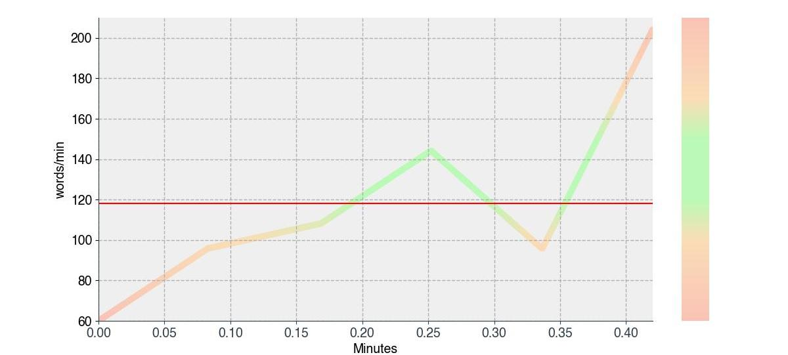
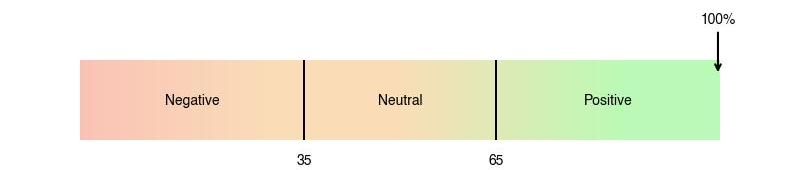
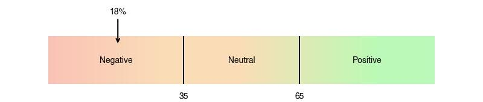
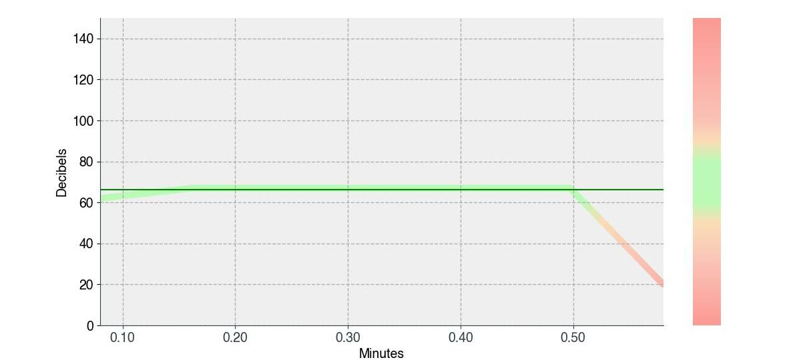

ASSESSMENT REPORT
VIVEK TEST
2023-Jul-08
Assessment Report | Vivek Test | 2023-Jul-08
VIVEK TEST
2023-Jul-08
This Leadership Report has been specifically crafted to assist you in navigating the development planning process. Its purpose is to help you integrate the outcomes from the EdMyst Assessment process into a comprehensive development plan. Whether used independently or alongside a formal coaching process, this report will prove effective.
Focused on your workplace performance, the Leadership Report examines both strengths and improvement opportunities. The strengths encompass the qualities that shape your impression on others and enable you to function optimally. On the other hand, the improvement opportunities refer to behavioral tendencies that could undermine your performance, impeding your effectiveness and eroding the quality of your relationships with customers, colleagues, and friends.
The primary goal of this report is to facilitate an understanding of your performance potential and identify any barriers that may hinder your achievements. As you review the information, it is important to consider three key points. First, only some statements may accurately reflect your self-perception. Second, everyone has inherent strengths and weaknesses, and any score can have positive and negative implications on performance. Lastly, focus on the overall themes presented in the report rather than getting caught up in individual details.
There are three ways in which this report can be utilized. Firstly, it provides a snapshot of your interpersonal performance within the workplace. Secondly, it serves as a tool to evaluate the alignment between your skills and the organization's expectations. Finally, it acts as a guide for contemplating performance improvement. When interpreting the results, it is essential to consider your own aspirations and goals, rather than assessing them in absolute terms.
You are able to smoothly bounce back from setbacks, adapt to change, and maintain a positive mindset in the face of adversity. You effectively navigate conflicts, handle stress, and maintain a positive and focused mindset. You inspire your team to explore new ideas, challenge the status quo, and take calculated risks that can lead to breakthrough solutions and opportunities.
However, you may struggle with prioritizing tasks, coordinating resources, and meeting deadlines. You may overlook important information or fail to thoroughly review documents, resulting in errors, inaccuracies, or incomplete work. You find it difficult to admit mistakes or accept ownership for failures. You tend to shift blame onto others or make excuses, which can negatively impact team morale and trust. Leadership development programs, mentorship, and coaching can provide valuable guidance and resources to overcome these challenges and further develop these essential leadership skills.
Leadership skills are the abilities and qualities that enable individuals to guide, inspire, and influence others towards achieving a common goal or vision. These skills are essential for effective leadership and can be developed and honed through experience, training, and self-reflection.
Making appropriate responses to changing situations, adapting one's behavior to manage changing circumstances or different people
Noticing and focusing on the smallest aspects of a task or project, ensuring accuracy, precision, and quality

Understanding and applying knowledge within a specific context or situation

Solving a problem by recognizing assumptions, evaluating the arguments, and then drawing conclusions about the problem

Sharing one's knowledge, skills, or expertise with others, and encouraging and reinforcing individual and professional development

Taking responsibility for one's and teams actions, decisions, and outcomes

Defining clear and specific goals, understanding the desired outcomes, identifying measurable objectives, and establishing realistic timelines for achieving them
Planning, organizing, and executing projects to achieve specific goals within defined constraints, such as time, budget, and resources

Formulating objectives and priorities, and implementing plans consistent with the long-term interests of the organization in a global environment

Working beyond the stereotypes of gender or creed and openly accepting differing perspectives
.jpg)
Working effectively and productively with others toward a common goal

Facing one's fears and trying something different by stretching one's mindset and embracing challenges

Adapting and coping constructively with unprecedented situations or events

Bringing in radical or incremental shifts or improvements and introducing and implementing new ideas

Shifting one's perspective with a sense of passion and hope that the outcome of some specific endeavor would be favorable

Promoting diversity, equity, and equality and creating a welcoming and supportive environment where everyone feels valued, respected, and included

Gaining the confidence and trust of others through honesty, integrity, and authenticity

Being receptive and willing to receive input, suggestions, and criticism from others

Appreciating and using the formal and informal relationships and structures for the benefit of the organization

Creating and promoting a culture where diversity is valued, and where individuals feel that their contributions are recognized and acknowledged

Withstanding adversity and bouncing back from difficult life situations with courage and emotional strength
Using ones time effectively and productively, and prioritizing tasks efficiently in order to manage one's time

Ensuring that everyone involved understands and is committed to the same overarching objectives and values

Effectively enabling individuals or teams to help them achieve their goals and maximize their potential
Being sensitive to the emotions of others, showing compassion, and actively listening to their concerns
Motivating and guiding the team to get the job done, and to bring out their best

Regulating one's emotions, thoughts, and behavior while inhibiting or giving in to temptations and impulses

Expressing ones ideas, opinions, and beliefs with confidence, clarity, and passion that inspires others to believe in and support ones message

Recognizing, interpreting, and effectively managing one's own emotional experiences

Coming up with progressive thoughts, seeing possibilities, and grabbing opportunities

Fostering a sense of trust, accountability, and confidence among team members, enabling them to reach their full potential and contribute meaningfully to their roles

Resolving problems with an open mind and consideration towards different perspectives and alternatives

Intending to achieve a long-term goal that is both personally meaningful and makes a positive mark at the workplace

Leading by example and serving as a positive role model for others to emulate

Regulating and adapting behavior to the demands of a situation for achieving personally chosen goals and values

| Attribute | Summary |
|---|---|
| Pace | 118 words per minute |
| Pause | 11 pauses |
| Fillers | 0 repititions |
| Repeated Words | 0 |
| Eye Contact | 100% of the time |
| Smile | 18% of the time |
| Sentiment | high |
| Volume | 66 dB |
You speak a bit slow based on the video.
Your average pace was 118 words per minute.The ideal pace is 120-150 words per minute in a professional conversation. Without adequate variation in pace, your conversation can appear to be monotonous.
Keep going! Continue practicing how to vary your pace throughout the conversation. Varying your pace makes the content more interesting for the listeners and adds emotion to the content.
You have taken 11 pause(s) in your 34 second(s) video recording.
| Types of Pauses | Duration of Pause | Number of Pauses |
|---|---|---|
| Long Pauses | Greater than 3.5 sec | 0 |
| Strategic Pauses | Between 2.5 to 3 sec | 2 |
| Transition Pauses | Between 1 to 2 sec | 3 |
| Sentence Pauses | Between 0.5 to 1 sec | 3 |
| Sensory Pauses | Between 0.3 to 0.5 sec | 3 |
It's great that you have not taken any long pauses because they might indicate that you are hesitant or unfamiliar with your content.
To be a confident and effective speaker, you can use short pauses depending on the content or topic you are speaking on and the audience you are addressing. In addition, you can use some pauses to create an appropriate impression or convey an emotional appeal depending on the content you are presenting. You can consider using strategic (1-2 pauses if required), transition (2-3 pauses), sentence (10-12 pauses), and sensory (15-20 pauses) pauses. Using no pauses or fewer pauses indicates anxiety, less confidence, and impulsive behavior.
You have used 0 filler word(s) in your recording.
You seem to be focused on your message and know how to keep the listeners engaged. You come across as a professional, prepared, and impactful communicator.
Continue practicing! Using too many fillers can distract your audience from the message and completely change their perception of you, making you seem less professional, unprepared, and less contextual. If a person uses more than two fillers every two minutes, they are likely to distract the listener. When you feel flustered while speaking, do not say anything instead of using a filler word. Videotape your speech and identify your crutch words. Be aware of their usage when you talk by consciously focusing on not using them.
You have not used any repeated words
You have not repeated any of the words in your video. It reduces or takes away redundancy if the word(s) is not explaining any technical information or is not a jargon.
Your overall sentiment analysis is positive based on your video.
We detected positive sentiments for most the times.
Continue using the positive words intentionally and more often as they are associated with positive feelings of happiness, joy, and excitement. In addition, it may undoubtedly evoke positive emotions in the listeners.
You have smiled 18% of the times in the video.
In 34 second(s) of your recording, you smiled for 6 second(s).
Smile occasionally if the content requires you to smile. Smile has enormous power to diffuse tense situations, smoothen conversations, raise the level of teamwork, and communicate friendliness. In addition, a genuine smile conveys pleasant emotions such as happiness, acceptance, and appreciation.
Your volume during the presentation was within the optimal range most of the time.
Your volume was <50 dB for 14% of the times, 50-90 dB for 86% of the times and > 90 dB for 0% of the times. You varied your volume in this recording. Change from soft to loud or loud to soft volume to emphasize the key thoughts during the presentation and create the desired attention. Also, while modulating your volume, be mindful of the size of the room and audience. Continue modulating your volume based on the emotional appeal that you are trying to convey through your presentation.
Believes in oneself and one's abilities, and acts with fortitude despite ambiguity or roadblocks.
To help you reflect on your strength, here are few self-reflection questions:
To help you leverage your strength, here are some suggestions:
Can self-regulate one's emotions, thoughts, and actions and does what needs to be done to bounce back from setbacks.
To help you reflect on your strength, here are few self-reflection questions:
To help you leverage your strength, here are some suggestions:
Manages one's emotions and reactions appropriately by exhibiting self-awareness.
To help you reflect on your strength, here are few self-reflection questions:
To help you leverage your strength, here are some suggestions:
May overlook pertinent information and struggles to complete tasks accurately.
To help you reflect on your development area, here are few self-reflection questions:
To help you develop in this area, here are some suggestions:
May hesitate to embrace personal responsibility for one's actions due to a lack of commitment.
To help you reflect on your development area, here are few self-reflection questions:
To help you develop in this area, here are some suggestions:
Tends to miss deadlines and falls behind schedule as a result of underestimating the time taken to complete the task.
To help you reflect on your development area, here are few self-reflection questions:
To help you develop in this area, here are some suggestions:
This report is a property of and the information provided in the report is to be used only by the individual or entity to which it is addressed, else you are hereby notified that any dissemination, distribution or copying of this communication is strictly prohibited. The interpretive information contained in this report should be viewed as only one source of hypotheses about the individual/ group being evaluated. No decisions should be based solely on the information contained in this report. Any interpretation of this report should take into account ALL relevant input, such as real-world experience, skills, interests, abilities, the market being addressed, and the product being sold. This material should be integrated with all other sources of information in reaching professional decisions about this individual. This report is confidential and intended for use by qualified professionals only.
The Content and Services of , as well as their selection and arrangement, are protected by copyright, trademark, patent, and/or other intellectual property laws, and any unauthorized use of the Content or Services may violate such laws and these Terms of Use. Except as expressly implied in these Terms of Use, does not grant any express rights to use the Content and/or Services. You have agreed not to copy, republish, frame, download, transmit, modify, rent, lease, loan, sell, assign, distribute, license, sublicense, reverse engineer, or create derivative works based on the Site, its Content, or its Services or their selection and arrangement, except as expressly authorized in these Terms of Use. In addition, you have agreed not to use any data mining, robots, or similar data gathering and extraction methods in connection with the database.